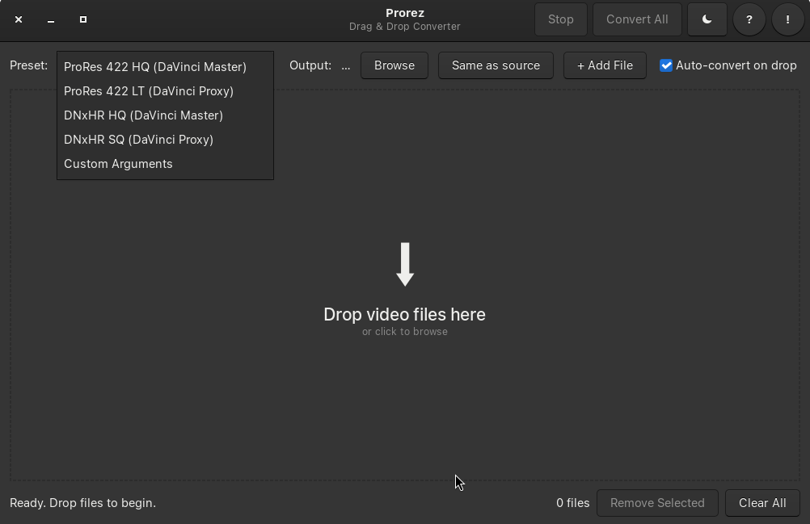

Prorez
Drag & drop video converter for DaVinci Resolve on Linux. GPU-accelerated ProRes & DNxHR encoding with PCM audio.

Everything you need
Convert video files to DaVinci Resolve-compatible formats with GPU-accelerated encoding.
Drag & Drop
Drop video files onto the window or click to browse. Instant queue for batch conversion.
GPU Auto-Detect
NVIDIA NVENC, Intel VA-API / QSV, AMD AMF — automatically detected and configured.
ProRes & DNxHR
Apple ProRes 422 HQ/LT and Avid DNxHR HQ/SQ for mastering, color grading, and proxy editing.
Light / Dark Theme
Toggle between light and dark GTK themes. Your preference is saved automatically.
Queue + Progress
File queue with real-time progress, FPS, and speed. Handle multiple files effortlessly.
Custom FFmpeg Args
Full control with custom FFmpeg arguments. Tweak encoder, bitrate, filters, and more.
Three simple steps
Drop Files
Drag video files into the window, or click + Add File to browse and select manually.
Select Preset
Pick a preset matching your workflow — ProRes, DNxHR, or Custom Arguments for full control.
Convert
Click Convert All and let Prorez handle the rest. Track progress in the queue.
Choose your workflow
Ready-to-use presets for every stage of post-production.
| Preset | Codec | Container | Use Case |
|---|---|---|---|
| ProRes 422 HQ | Apple ProRes | MOV | Mastering, Color Grading |
| ProRes 422 LT | Apple ProRes | MOV | Proxy Editing |
| DNxHR HQ | Avid DNxHR | MOV | Professional Mastering |
| DNxHR SQ | Avid DNxHR | MOV | Proxy Editing |
| Custom Arguments | User-defined | — | Full FFmpeg Control |
Get up and running
Install system dependencies, clone the repo, and you're ready to go.
sudo apt install python3-gi gir1.2-gtk-3.0 ffmpegClone and run — no virtual environment needed (all dependencies are system packages):
git clone https://github.com/dezuhan/prorez.git
cd prorez
python3 prorez.pySimple and intuitive
python3 prorez.py- Drag video files into the window (or click + Add File)
- Select a preset matching your workflow
- Click Convert All
Output files are saved as prorez_convert_[original_name].[ext] in the source folder by default.
System & Hardware
System
- ✓ Linux (X11)
- ✓ Python 3.8+
- ✓ GTK 3
- ✓ FFmpeg (with ffprobe)
Optional GPU
- ○ NVIDIA drivers + FFmpeg with nvenc
- ○ Intel:
intel-media-va-driver - ○ AMD:
mesa-va-drivers
Frequently asked
Why does DaVinci Resolve need file conversion?
ProRes vs DNxHR — which should I use?
Does Prorez support hardware acceleration?
Why are converted files so large?
Can I convert multiple files at once?
What audio codec should I use?
Does Prorez work on Windows or macOS?
Release history
Changelog is maintained on GitHub. See the full release history:
View all releases on GitHubOpen discussion
Prorez is feature-complete for its intended use case. There is no formal roadmap at this time.
Contributions, ideas, and feedback are welcome! Open an issue or start a discussion on GitHub.
GitHub Issues